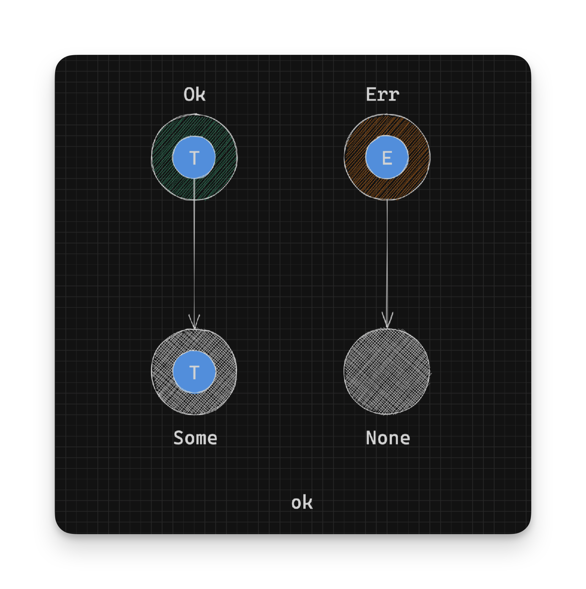
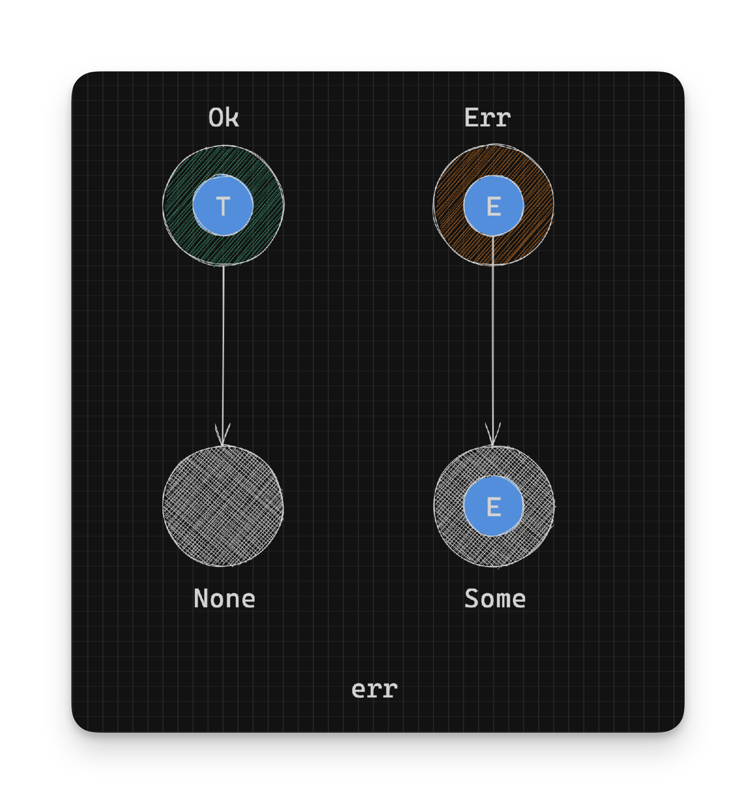
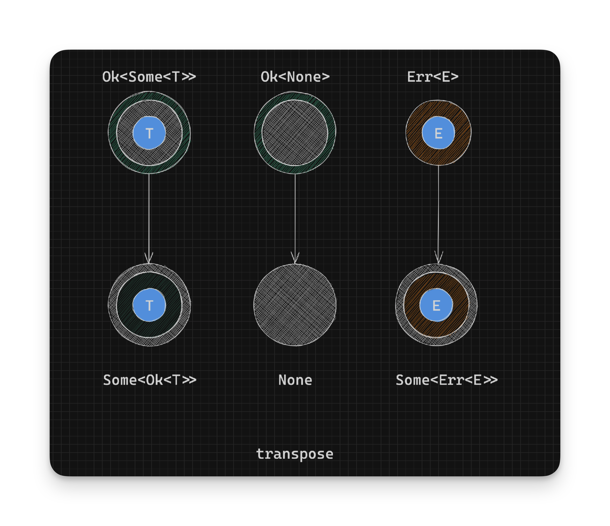

Working With Rust Result - Conversion to Option - Part 11
It’s often useful to convert a Result to its Option equivalent. Here are some functions that let us do that.
One thing to keep in mind is that an
Optionrepresents only a single type while aResultrepresents two types; one for success and one for error. Conversion to anOptionwill result in some data loss; either the success value or the error value will be lost in the conversion.
ok
ok maps an Ok instance to a Some instance and an Err instance to a None:
pub fn ok(self) -> Option<T> {
match self {
Ok(x) => Some(x),
Err(_) => None,
}
}In summary:
// pseudocode
// Given: Result<T, E>
// Result type: Option<T>
Ok(t:T) -> Some(t) // Option<T>
Err(_) -> None // Option<T>
For example, to only get a list of valid numbers from a list strings, we could use filter_map. filter_map filters and maps at the same time, only returning values that are wrapped in a Some constructor:
let maybe_numbers =
vec![
"1",
"2",
"three",
"4"
];
maybe_numbers
.iter()
.filter_map(|maybe_number| {
parse_number(maybe_number).ok()
})
.collect::<Vec<_>>(); // [1, 2, 4]err
This is the opposite of ok where we reverse the mappings, going from an Ok instance to None and an Err instance to
Some:
pub fn err(self) -> Option<E> {
match self {
Ok(_) => None,
Err(x) => Some(x),
}
}In summary:
// pseudocode
// Given: Result<T, E>
// Result type: Option<T>
Err(e:E) -> Some(e) // Option<E>
Ok(_) -> None // Option<E>
For example, if we only wanted invalid numbers from our list of possible numbers, we could use:
let only_errors =
maybe_numbers
.iter()
.filter_map(|maybe_number| {
parse_number(maybe_number)
.err()
.map(|e| (maybe_number, e)) // Return a pair of the "number" and the error
})
.collect::<Vec<_>>(); // [("three", ParseIntError { kind: InvalidDigit })]transpose
If we have a Result with a nested Option such as Result<Option<T>, E>, it’s useful to convert it to an Option with a nested Result such as Option<Result<T, E>>. We can achieve this with the transpose function which is defined as:
impl<T, E> Result<Option<T>, E> {
pub const fn transpose(self) -> Option<Result<T, E>> {
match self {
Ok(Some(x)) => Some(Ok(x)),
Ok(None) => None,
Err(e) => Some(Err(e)),
}
}
}In summary:
// pseudocode
// Given a Result<Option<T>, E>
// Result type: Option<Result<T, E>>
Ok(Some(t:T)) -> Some(Ok(t)) // Option<Result<T, E>>
Ok(None) -> None // Option<Result<T, E>>
Err(e:E) -> Some(Err(e)) // Option<Result<T, E>>
We are basically flipping the containers; going from Result<Option<T>, E> to a Option<Result<T, E>>.
But why is this useful?
This can be useful when you have a one or more Result<Option<T>, E>s and want to know if all the inner Option types are
valid Some instances. For example, to retrieve only even numbers or any parse errors we could use:
let maybe_numbers_2 =
vec![
"1",
"2",
"three",
"4",
"5",
"6",
"se7en",
];
maybe_numbers_2
.iter()
.filter_map(|maybe_number| {
parse_number(maybe_number)
.map(|n| {
if n % 2 == 0 {
Some(n) // We only want even numbers
} else {
None // We want odd numbers filtered out
}
})
.transpose()
})
.collect::<Vec<_>>() // [Ok(2), Err(ParseIntError { kind: InvalidDigit }), Ok(4), Ok(6), Err(ParseIntError { kind: InvalidDigit })]- Continue on to Value Tests
- Back to TOC